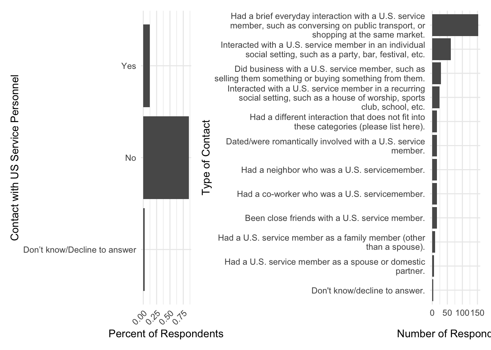

A short guide on how to effectively use real estate with information-dense plots.
blogging
data analysis
data science
dataviz
data visualization
statistics
Author
Michael Flynn
Published
August 7, 2024
Tip
Who’s this for? This is a short guide with a couple of useful tips for better utilizing your plot real estate with ggplot when you’ve got a lot going on. This is for anyone who wants to make their plots more informative and visually appealing when dealing with lots of information, labels, titles, etc.
#|echo: false#|message: false#|include: false#|warning: false#|error: false# Load libraries and data# Do some basic cleaning to get the variables ready for plottinglibrary(tidyverse)
── Attaching core tidyverse packages ──────────────────────── tidyverse 2.0.0 ──
✔ dplyr 1.1.4 ✔ readr 2.1.5
✔ forcats 1.0.0 ✔ stringr 1.5.1
✔ ggplot2 3.5.1 ✔ tibble 3.2.1
✔ lubridate 1.9.3 ✔ tidyr 1.3.1
✔ purrr 1.0.2
── Conflicts ────────────────────────────────────────── tidyverse_conflicts() ──
✖ dplyr::filter() masks stats::filter()
✖ dplyr::lag() masks stats::lag()
ℹ Use the conflicted package (<http://conflicted.r-lib.org/>) to force all conflicts to become errors
Rows: 2254 Columns: 106
── Column specification ────────────────────────────────────────────────────────
Delimiter: ","
chr (79): Status, ResponseId, DistributionChannel, UserLanguage, Q56, gender...
dbl (11): StartDate, EndDate, Progress, Duration (in seconds), RecordedDate,...
lgl (16): Finished, rnid, study, PID, K2, RISN, rid, Q_BallotBoxStuffing, Q_...
ℹ Use `spec()` to retrieve the full column specification for this data.
ℹ Specify the column types or set `show_col_types = FALSE` to quiet this message.
data.contact.type <- data |> dplyr::select(contact_pers_type) |> tidyr::separate_longer_delim(contact_pers_type,delim = stringr::regex("\\.\\,|\\,(?=[A-Z])")) |># This regex identifies a comma followed by a period, or a comma immediately followed by a capital letter, but uses the lookahead question mark thing to ignore the capital letter so it doesn't include it as a delimiter. dplyr::mutate(contact_pers_type =trimws(contact_pers_type),contact_pers_type =gsub("\\b$", "\\.", contact_pers_type),contact_pers_type =gsub("\\.\\.", "\\.", contact_pers_type)) |> dplyr::group_by(contact_pers_type) |> dplyr::summarise(total =n()) |>filter(!is.na(contact_pers_type))
This is a short post inspired by some recent work I did on a project. The primary goal is to show ggplot users a couple of tricks that they can use to make better use of the visual space in their plots when they have a lot of information to display. This is especially useful when you have multiple plots that you want to display together, and you want to make sure that they are visually appealing and informative. It can also be helpful when you’re trying to display lots of information in axis labels. I’ll be using the ggplot2 package in R for this post, but the principles should be applicable to other plotting libraries as well.
This is a pretty short example but I’ll try to walk through my process. Readers who want to take a deeper dive into this topic might want to check our Kieran Healy’s excellent book on data visualization, Data Visualization: A Practical Introduction.
The Problem
When you’re working with ggplot, you often have a lot of information that you want to display in your plots. This can include things like titles, axis labels, legends, and other annotations. However, if you’re not careful, all of this information can quickly clutter up your plot and make it difficult to read and interpret. This is especially true when you’re trying to display multiple plots together, as you might in a grid or faceted plot.
One thing to note is that I have a personal bias towards wanting to display information with figures where possible. Tables can be great, but I think it’s often easier to process lots of information—particularly when we’re comparing across categories—when we’re dealing with visual representations of that information. So I’m always looking for ways to make my plots as informative as possible without sacrificing readability.
Example
On a recent project we were attempting to show a couple of different related points of information. Without going into too much unnecessary detail, we wanted to show information from a survey that we fielded on individual attitudes towards US military personnel stationed in their country. Specifically, we wanted to show 1) the number of people who reported having personal contact with US service personnel, and 2) the nature of the contact for those individuals who reported it. Ultimately we wanted to show the categories and the count of individuals who responded for each category.
Example 1
Here’s a bare bones example of what we’re looking for.
p1 <-ggplot(data, aes(y = contact_pers, x =after_stat(count/sum(count)))) +geom_bar() +labs(x ="Percent of Respondents",y ="Contact with US Service Personnel")p2 <-ggplot(data = data.contact.type, aes(y =reorder(contact_pers_type, total), x = total)) +geom_bar(stat ="identity") +labs(x ="Number of Respondents",y ="Type of Contact")patchwork::wrap_plots(p1, p2, ncol =2)
Figure 1
Some obvious problems with Figure 1. The proportions are way off, largely due to the fact that the reported contact types are long character strings. This forces the plot on the right to take up waaaaaaay more space then it should, crowding out all the other information. We can’t even see the bars or numbers, which are kind of important.
This is a bit of a straw man as it uses a completely bare bones ggplot without any modifications, but it helps to highlight some of the problems that we’re dealing with. There are a few basic things we can do to clean this up and make it more informative.
Example 2
p1 <-ggplot(data, aes(y = contact_pers, x =after_stat(count/sum(count)))) +geom_bar() +labs(x ="Percent of Respondents",y ="Contact with US Service Personnel") +theme_minimal() +theme(axis.text.x =element_text(angle =45, hjust =1))p2 <-ggplot(data = data.contact.type, aes(y =reorder(contact_pers_type, total), x = total)) +geom_bar(stat ="identity") +labs(x ="Number of Respondents",y ="Type of Contact") +theme_minimal() +scale_y_discrete(labels =function(x) str_wrap(x, width =55))patchwork::wrap_plots(p1, p2, ncol =2)

Figure 2
Figure 2 is a little bit better. We can see the actual axis values and bars, which are carrying almost all of the information that we care about. The big improvement here comes from the scale_y_discrete(labels = function(x) str_wrap(x, width = 55)) line of code in the right plot. The str_wrap() function allows ggplot to wrap the character strings across multiple lines, which makes them much easier to read and produces far less distortion in the plot. You can manipulate the width argument to get the desired number of characters per line and tweak the spacing.
But we can still do better. For example, in the left panel we can see the bars are disproportionately sized compared to the bars in the right panel. This isn’t surprising as we have very few categories in the left plot and several in the right, but we’re stretching them out across the same vertical space. It’s not terrible, but the distortion is notable and distracting. The ordering of these values also isn’t great. We could order them so their in descending frequency, like we do in the right panel. Last, presenting the x axis values as percentage values rather than proportions will better match the count values in the right panel.
We can also see that the category character strings in the right panel are extremely difficult to read. They’re not right justified, and they run across multiple lines. Finding specific starting points can be tough, and sometimes one category kind of runs into the next, making it hard to match specific categories with their corresponding bars and counts.
Example 3
Let’s take another pass and try to iron out some of these issues.
Figure 3 fixes some big problems with the previous plots, but also creates some new ones. Stacking the figures on top of one another fixes the problems with the distorted column sizes and the difficulty in reading the category labels. It looks a little better now.
First, we moved from two columns to a single column, placing the plots on top of one another. This produces less compression in the bars helps us to better compare the relative size/magnitude of the x axis values within each plot.
We can also see in the bottom panel that the respondent categories are left justified, which makes it easier to read the categories and match them to bars. To make it even easier to match categories to particular bars/counts we’ve added a dotted line that runs the length of the y-axis. We do this using the theme() function and the axis.ticks.y.left and axis.ticks.length.y.left arguments. This takes some tweaking to get right, and depends on the settings in the str_wrap() arguments in the scale_y_discrete() function. It will also depend on the overall dimensions of the figure.
But we can see the bottom panel is now even more crowded. The dotted lines are great, but they don’t help when the text is spilling over from one category to the next.
Example 4
OK, let’s take one more pass and iron out some of the details. This last step also requires that we revisit some of the data cleaning processes that produce the data we use in each plot.
data.contact.type <- data |> dplyr::select(contact_pers_type) |> tidyr::separate_longer_delim(contact_pers_type,delim = stringr::regex("\\.\\,|\\,(?=[A-Z])")) |># This regex identifies a comma followed by a period, or a comma immediately followed by a capital letter, but uses the lookahead question mark thing to ignore the capital letter so it doesn't include it as a delimiter. dplyr::mutate(contact_pers_type =trimws(contact_pers_type),contact_pers_type =gsub("\\b$", "\\.", contact_pers_type),contact_pers_type =gsub("\\.\\.", "\\.", contact_pers_type),contact_pers_type =gsub("^", "\u2022 ", contact_pers_type)) |> dplyr::group_by(contact_pers_type) |> dplyr::summarise(total =n()) |>filter(!is.na(contact_pers_type))# set custom color for barsbarcolor <- viridis::turbo(1, begin =0.10)p1 <-ggplot(data = data,aes(y = contact_pers,x =after_stat(count/sum(count)))) +geom_bar(fill = barcolor) +theme_minimal() +scale_x_continuous(labels = scales::percent_format(),limits =c(0, 1),expand =c(0, 0.01)) +labs(x ="Percent",y ="Reported Contact") p2 <-ggplot(data = data.contact.type,aes(y =reorder(contact_pers_type, total),x = total)) +geom_bar(fill = barcolor,stat ="identity") +scale_x_continuous(expand =c(0, 1)) +scale_y_discrete(labels =function(x) str_wrap(x, width =55, exdent =3)) +labs(x ="Count",y ="Contact Type") +theme_minimal() +theme(axis.text.y.left =element_text(size =9.0,hjust =0,vjust =0,margin =margin(r =-5.0, b =0.5, unit ="cm")),axis.ticks.length.y.left =unit(5.5, "cm"),axis.ticks.y.left =element_line(linetype ="dotted",linewidth =0.3))patchwork::wrap_plots(p1, p2, ncol =1) + patchwork::plot_layout(ncol =1,heights =c(1,3)) +plot_annotation(tag_levels ='A') &theme(text =element_text(family ="Oswald", size =10))
Figure 4
Way better! So what did we do here?
First, we added a bullet point to the beginning of each category in the contact type data. We did this with the simple gsub() function here: contact_pers_type = gsub("^", "\u2022 ", contact_pers_type). This just uses a mutate command to insert a bullet point into the beginning of each character string in the contact_pers_type category. This helps to visually separate the categories from one another and makes it easier to match the categories to the bars.
Note that because the bullet point adds a new character and a blank space, we also want to make sure that the str_wrap() argument is aligning the new lines with the first line so the bullet point actually leads the rest of the text. That is, we don’t want the line break to start a new line flush with the bullet point because this would reduce the bullet point’s use in distinguishing new lines. We do this with the exdent argument in the str_wrap() function. Again, play with values here to find what works for your plot.
We also increased the overall vertical spacing of the plot. We did this here with Quarto’s fig-height and fig-width arguments, but you could also do this by adjusting the size of the plot in the ggsave() function when you save the plot to include in another document. But adding vertical space helps to eliminate the overlap in the text for the contact type categories.
Last, we used the patchwork package to adjust the proportions of the individual plots. In this case we set the heights of the plots to 1 and 3, respectively. This gives the bottom plot more vertical space, which helps to eliminate the overlap in the text, and also brings the heights of the top panel’s bars even more into line with the bar heights in the bottom plot. We also added subplot labels to distinguish more easily between panels “A” and “B”.
Other Options?
This assumes we want to do all of the work in ggplot, but there are other options for accomplishing similar goals. For example, we could use the gt and geExtras packages to do something similar with sparkline plots. This can be be great in certain circumstances, but I think it would be a bit more difficult to get the same level of control over the plot aesthetics since we’re dealing with two plots and two different axis scales.
But here’s an example of how you might do this with gt and gtExtras: